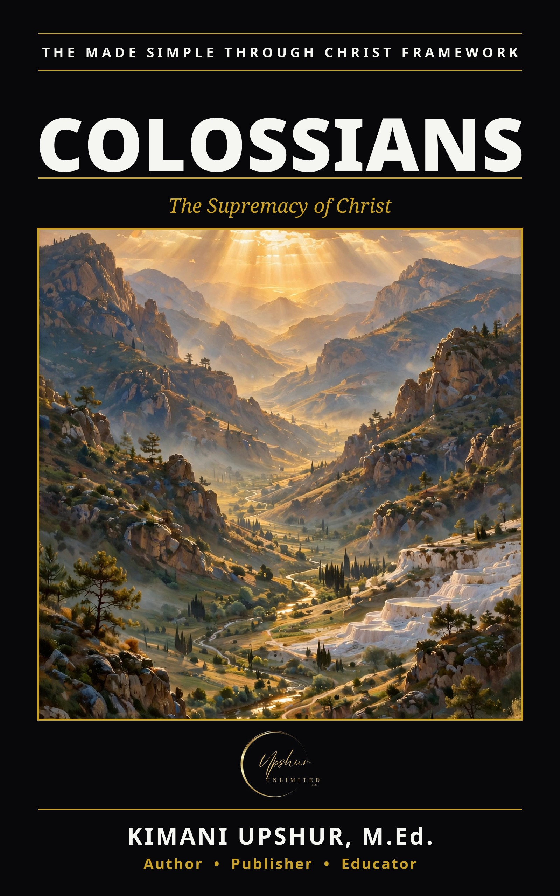

Colossians Made Simple

A small church in a small town had a big problem — and Colossians Made Simple walks through Paul's answer slowly, one chapter a day, until its message is unmistakable: Christ is supreme, Christ is sufficient, and Christ is Lord of every room of your life. The Colossians were doing well. Then smooth teachers arrived with a message that sounded spiritual: Jesus is good, but you need more — more visions, more rules, more secret knowledge. Jesus plus something. Paul, writing from prison to a church he had never visited, answers with the most exalted picture of Jesus in all his letters. This book follows the whole letter in order across twelve short chapters, Scripture first, with teaching that bows to it. The message compresses into three words. Above — Christ the image of the invisible God, before all things, head of the church, reconciling all things by the blood of His cross. In — the mystery revealed: "Christ in you, the hope of glory." The fullness of the Godhead dwells in Him bodily, the record of debt is canceled, and you are complete in Him — no additions needed. Out — the risen life walked into the kitchen, the marriage, the workplace, and the neighborhood: a new self put on, a household ordered, a life of prayer and witness. Scripture quotations are drawn primarily from the King James Version, with a small number of English Standard Version quotations, each labeled where it appears. Colossians Made Simple is part of THE MADE SIMPLE FRAMEWORK by Kimani Upshur, M.Ed. (Upshur Unlimited, LLC).
- Publisher
- Upshur Unlimited, LLC
- Author
- Kimani Upshur, M.Ed.
- Format
- Ebook
- Language
- English